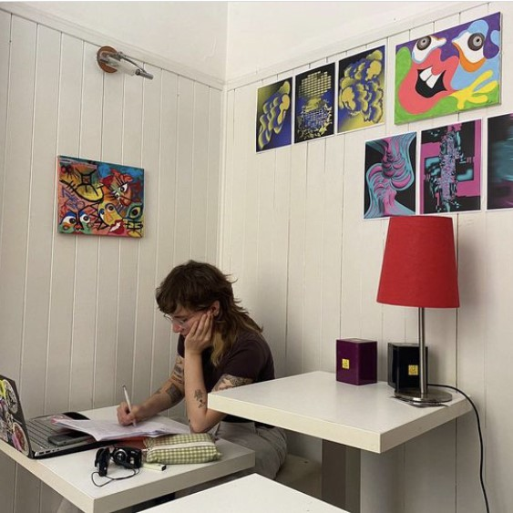

An atlas of Italian culture · Information Visualization · University of Bologna, 2023/24
Where you live in Italy decides how much culture you can reach.
Italy has more than thirteen thousand libraries and four and a half thousand museums, but they are not spread, used or priced evenly. This atlas follows public data from ISTAT and the Ministry of Culture region by region, adjusts for population wherever the data allows, and lets you open every institution on the map one by one.
A public library in Emilia-Romagna made 10,137 local loans in 2022 on average. One in Campania made 149.
Loans per libraryof people aged 6 and over in Sicily read at least one book in 2021, against 50.3% in Trentino-Alto Adige.
Reading by regionof 7,899 municipalities have no library in the 2022 register: about one in four.
Municipalities without a librarylibraries per 10,000 inhabitants in Campania and Puglia (2012), against 3.8 in Trentino-Alto Adige. Italy: 2.1.
Libraries per inhabitantCounting libraries rewards big provinces. Per inhabitant, the map changes.
A map of raw counts mostly shows where people live: Rome has the most libraries simply because it has the most residents. ISTAT's 2012 table gives both the count and the rate per 10,000 inhabitants for every province. Scroll on and the same map redraws from one measure to the other.
Libraries by province, 2012
Same boundaries, two measuresNumber of libraries
Sud Sardegna: created in 2016, no 2012 value.
Counted, the big cities lead.
Rome has the most libraries (928), then Milan, Turin and Naples. The darkest provinces are simply the most populous.
Per inhabitant, the Alps and Trieste lead.
Rome drops to an average 2.3 per 10,000. Trieste leads with 5.2; the lowest rates are in the south and in dense commuter provinces: Barletta-Andria-Trani 0.6, Latina and Ragusa 0.8, Monza e della Brianza 0.9.
The rate is the fairer measure.
It says how many libraries there are for each resident, which is closer to what a person can actually reach. Hover or tab to a province for both numbers.
Show the data table (110 provinces)
Source: ISTAT on the ICCU register of libraries (Anagrafe delle biblioteche italiane), 31 December 2012, table 4.1. The rate is ISTAT's own figure. 2012 is the latest year in this repository that includes population-based rates; the 2022 register gives counts only. Sardinian provinces are drawn on today's borders.
Libraries per 10,000 inhabitants, by region, 2012
Grouped by area, rankedThe south is not uniformly under-served: small regions such as Molise (3.7) and Sardegna (2.8) rank high. The gap is in the big southern regions, where most southerners live: Campania and Puglia (1.5) and Sicilia (1.7). ISTAT's area averages: north 2.3, centre 2.3, south and islands 1.8.
Show the data table
Every library, museum and archive we could place on a map.
This map joins two public registers: the Ministry of Culture's "Luoghi della cultura" (museums, archives, state libraries, monuments and archaeological sites, with address, opening hours and full ticket price) and the ICCU register of libraries (name and position). Search for a place, filter by type or free entry, and open any dot to read its record.
Loading the atlas…
Zoomed out, each hexagon counts the places inside it; click one to zoom in. Zoomed in, each mark is one place. Keyboard: focus the map, ←↑→↓ move to the nearest place, Enter opens it, +/− zoom, Shift+arrows pan, Esc closes the card.
Choose a dot on the map, a search result or a place from the list to open its record card.
Places in view
Sources: dati.cultura.gov.it, "Luoghi della cultura", 2022 export (data/Dataset_luoghi_cultura/dataset_luoghi_cultura_2022.rdf, 6,122 places with coordinates); ICCU Anagrafe delle biblioteche, 2022 (data/Dati_biblioteche/lat_long.json, 13,046 libraries after removing 238 that sit within about 150 m of a Ministry library record). Municipality, province and region on each card are computed by placing the point in geojson/comuni.geojson. Entry is shown only where the record states a price or "Gratuito". Contact e-mails and phone numbers are left out because some are personal.
One municipality in four has no library of its own.
We placed each of the 13,319 geolocated libraries in the 2022 register inside the municipal boundary that contains it. 2,040 of the 7,899 municipalities in the boundary file contain none. This gap does not follow the north–south line: Abruzzo and Piemonte have the highest shares, Sardegna and Sicilia some of the lowest.
Municipalities with no library, share by region
% of municipalities, 2022 registerAbruzzo: 170 of 305 municipalities (56%) have no library. Piemonte (42%) and Liguria (41%) follow. At the other end, Sardegna (6%), Sicilia and Emilia-Romagna (9%) have a library in almost every municipality.
Show the data table
Sources: library coordinates from the 2022 register (data/Dati_biblioteche/lat_long.json); municipal boundaries from geojson/comuni.geojson. 7 records without coordinates and 43 points outside every boundary were left out. Computed by scripts/build_story_data.py.
Southern libraries lend a fraction of what northern ones do.
Having a library is not the same as using one. ISTAT's 2022 survey reports the average number of local loans per library that answered, which already removes the effect of how many libraries a region has. We use public libraries for the ranking: in Lazio a few private libraries account for 5.5 million loans, which would push its all-library average to 18,218.
Local loans per public library, 2022
Average per library; south and islands highlightedThe eight southern and island regions all sit at the bottom. Campania's 149 loans a year are fewer than three a week; Emilia-Romagna's 10,137 are almost 200 a week. Across areas, a public library in the north-east lends 7,631 times a year, one in the south 441: 17 times fewer.
Show the data table
Source: ISTAT, Indagine sulle biblioteche pubbliche e private, year 2022, table 4.12 (PrestitiBiblioRegioni2022.csv). Loans exclude renewals and inter-library loans. Trentino-Alto Adige covers Trento only; Bolzano's figure is not available.
Loans per public library by type of place, 2022
Same survey, two groupingsLibraries in cities lend 9 times more than rural ones (12,655 against 1,429). The Italian "inner areas" classification tells the same story: the further a municipality is from services, the less its library lends.
Degree of urbanisation
Distance from services (inner-areas class)
Show the data table
Where libraries lend less, fewer people read.
The reading survey is already a share of the population (people aged 6 and over, reading outside school and work), so regions can be compared directly. The two panels share one order: regions ranked by the share who read at least one book.
Reading habits by region, 2021
% of people aged 6+In Sicilia, Campania, Calabria and Puglia fewer than 3 in 10 people read a single book in 2021; in Trentino-Alto Adige it was half. Strong readers (12 or more books) are 2.0% in Molise and 11.3% in Trentino-Alto Adige.
Read at least one book
Read 12 books or more
Show the data table (all six measures)
Source: ISTAT, reading for reasons other than school or work, 2021 (Dati-Abitudini-lettura-regioni-2021.csv). The survey also splits print, digital and mixed readers; those figures are in the table.
Loans per public library (2022) and share of readers (2021)
One dot per region; horizontal scale is logarithmicThe regions line up: where libraries lend more, more people read. This shows association, not cause: many other things differ between these regions.
Pearson correlation between the log of loans and the share of readers across the 20 regions: 0.92. A log scale is used because loans range from 149 to 10,137, a factor of 68. Trentino-Alto Adige loans cover Trento only.
Price is not where the gap is.
Of the 4,559 museums in the Ministry's open register, 2,556 state their entry conditions: 1,370 free and 1,186 with a ticket. Free entry does not follow the north–south line.
Museums with free entry, share by region
% of museums whose record states free entry or a ticketCampania (78%) and Emilia-Romagna (76%) have the highest share of free museums, Trentino-Alto Adige (10%) and Sardegna (17%) the lowest. In this data, the southern gap shows up in how libraries are used, not in what museums charge.
Show the data table
Source: dati.cultura.gov.it, "Luoghi della cultura" (Numbers_of_MALs_Per_Region_Free_Entry.csv, …_Ticket_Cost.csv). Share = free ÷ (free + ticket). Museums whose record gives neither are left out, so small regions rest on few records (Molise: 15). You can find the free museums themselves in the atlas with the entry filter.
How does your region or province compare?
Pick a place to see every measure in this atlas for it, next to the Italian figure and its rank. Add a second place to compare the two. The address bar keeps your choice, so the profile can be shared as a link.
Sources as in the chapters above: ISTAT 2012 library rates (table 4.1), ISTAT 2022 loans (table 4.12), ISTAT 2021 reading, dati.cultura museum entry counts, and counts of places on the atlas (computed). Loans, reading and museum entry exist only by region, so a province shows its region's figure, labelled as such. Ranks are 1 = highest value.
What the data says
Use is the widest gap.
Libraries are only somewhat scarcer in the south (1.8 against 2.3 per 10,000), but they lend 17 times less. The gap in use is far wider than the gap in supply, so more buildings alone would not close it. See loans per library
Small places are left out, north and south.
One municipality in four has no library; the share is highest in Abruzzo (56%), Piemonte (42%) and Liguria (41%). Rural libraries lend 9 times less than urban ones. See reach
Reading follows the same line.
The four largest southern regions have the fewest readers (27–29%), and the regions where libraries lend least read least. See reading and loans
Counts mislead; rates help.
Absolute counts crown Rome and Milan. Per inhabitant, Trieste, the Alpine provinces and parts of Sardinia lead, and the densest commuter provinces fall behind. See the supply map
How the numbers were made
- Data
- ISTAT tables on libraries (2010–2022), library loans (2019–2022) and reading habits (2011–2021); the ICCU register of libraries; the Ministry of Culture's open "Luoghi della cultura" dataset on dati.cultura.gov.it (museums, archives, libraries, heritage sites, entry prices). All files are in the repository.
- Per capita
- Libraries per 10,000 inhabitants are ISTAT's own rates for 2012. The repository has no population figures for other years, so we did not compute rates ourselves. Loans are ISTAT's average per library; reading figures are already shares of the population.
- Headline figures
- 68× = 10,137 ÷ 149 (loans per public library, Emilia-Romagna ÷ Campania, 2022). 17× = 7,631 ÷ 441 (north-east ÷ south). 9× = 12,655 ÷ 1,429 (cities ÷ rural areas). One in four = 2,040 ÷ 7,899 municipalities.
- The atlas
- Each record card shows the fields the source provides: name, type, address and postcode, town, province and region as recorded, website, opening hours (in Italian, as recorded), the full ticket price, a short excerpt of the description, the record's own source and last update. The export also lists a reduced price, but it equals the full price in all 1,326 records, so it is not shown. Phone numbers and e-mails are left out. ICCU libraries carry only a name and a position. The municipality line is computed from the coordinates. Zoomed out, points are counted into hexagons about 20 pixels across.
- Your place
- Ranks use the same figures as the charts: 20 regions, or the provinces that have a value. Counts of places are computed from the atlas and are counts, not rates.
- Areas
- North: Piemonte, Valle d'Aosta, Lombardia, Trentino-Alto Adige, Veneto, Friuli-Venezia Giulia, Liguria, Emilia-Romagna. Centre: Toscana, Umbria, Marche, Lazio. South & islands: Abruzzo, Molise, Campania, Puglia, Basilicata, Calabria, Sicilia, Sardegna (ISTAT's "Mezzogiorno").
- Processing
- Data gathering and cleaning in Python notebooks (in
data/). The figures on this page are rebuilt from those files byscripts/build_story_data.py, which also simplifies the province boundaries, runs the point-in-polygon counts and extracts the atlas records from the RDF export. - Colour
- Terracotta, library green and ink blue mark libraries, museums and archives; they were checked for colour-blind separation on both themes. Every mark also has its own shape, and every chart has a data table.
- Licence
- Data from dati.cultura and ISTAT: CC BY 4.0. Project: CC0 1.0, by Alice Picco, Salvatore Di Marzo and Corrado Consiglio.
- Built with
- D3.js, canvas, GeoJSON, HTML and CSS. Type: Fraunces and Source Serif 4. No tracking; the theme choice is kept only in your browser.
Team
Corrado Consiglio
Data gathering, data curation and cleaning, data investigation
Salvatore Di Marzo
Data gathering, data curation and cleaning, data investigation

Alice Picco
Data gathering, data visualisation, web development